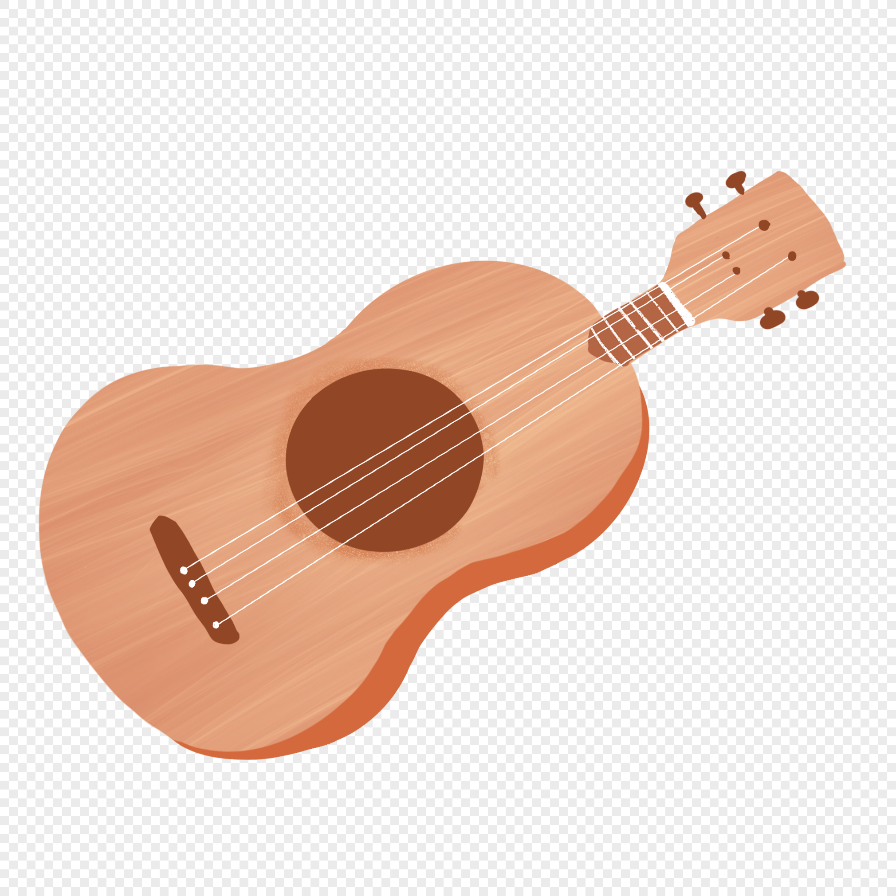
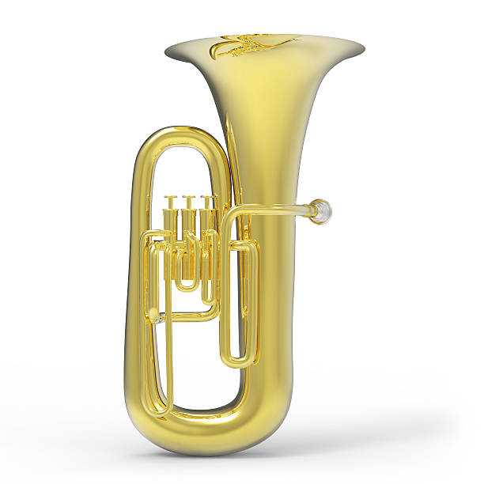
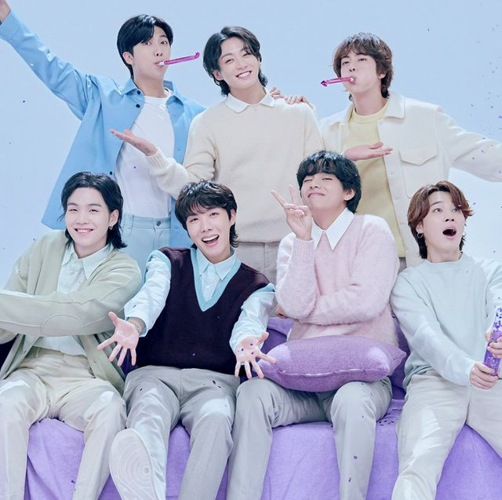
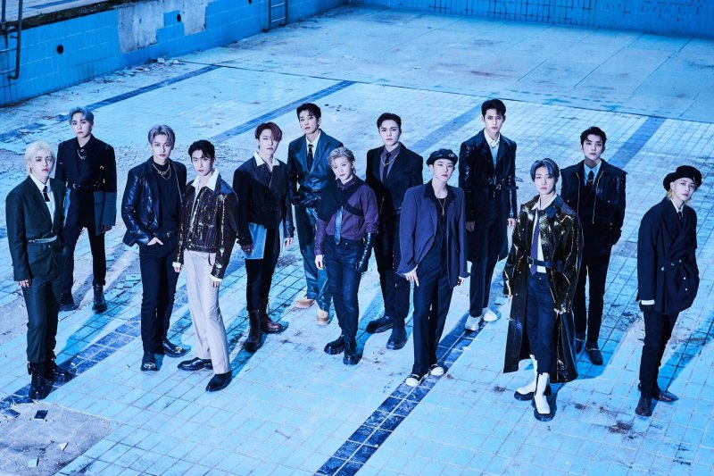
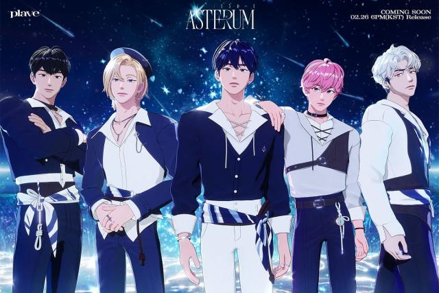
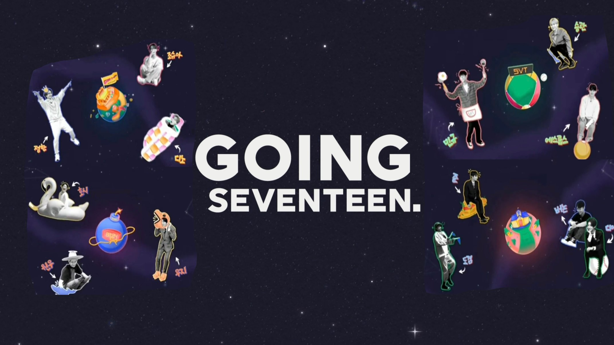

Noah 林宜葶
A112070017
信箱：superkstar789@email.com
最愛冷笑話的人，有時候會突然蹦出不知道意思的話。
嗨!我是一個來台北讀書的人,目前是大一生。我喜歡聽歌,喜歡用音樂來表達自己的喜怒哀樂,也喜歡看喜歡的偶像們在舞台上表演。平時喜歡宅在家看舞台或者是看電視,也喜歡跟朋友們一起出去玩,跟他們在一起的時間總是過很快。
最愛冷笑話的人，有時候會突然蹦出不知道意思的話。
國中-副班長、風紀股長
國中-樂隊
高中-副班長、衛生股長
| 拔河 (國小) |
游泳 (國小) |
烏克麗麗 (國小) |
上低音號 (國中) |
|---|---|---|---|
 |
 |
喜歡聽音樂、唱歌、看綜藝、看動漫、看漫畫和騎腳踏車
像常聽的音樂有Kpop和Jpop，少許其他語言。
綜藝較常看台灣、韓國和中國的，而一些Kpop團體也會有自己自製的團綜，像是：Run BTS、Going seventeen這些。動漫和漫畫我都看日本的和韓國的，一些題材都很酷、很科幻，劇情也很吸引人。平時有時間天氣又好的時候就會騎著腳踏車出去晃晃順便去買東西，對我來說這算是一種休閒娛樂。
我最喜歡的三個韓國團體
| 團名 | 男團/女團 | 連結 | 團體照 |
|---|---|---|---|
| BTS | 男團 | BTS |  |
| Seventeen | 男團 | Seventeen |  |
| Plave | 男團 | Plave |  |
綜藝
| 名稱 | 國家 | 連結 | 團體照 |
|---|---|---|---|
| RUN BTS | 男團 | BTS | |
| GOING SEVENTEEN | 男團 | Seventeen |  |
| RUNNING MAN | 男團 | Plave |